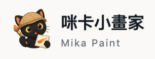
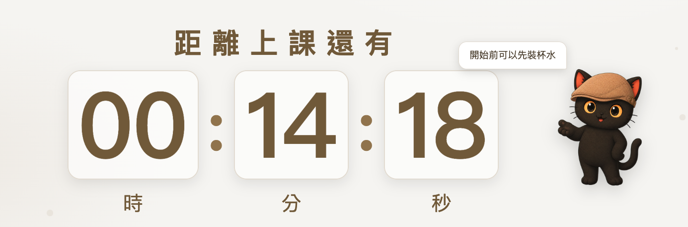
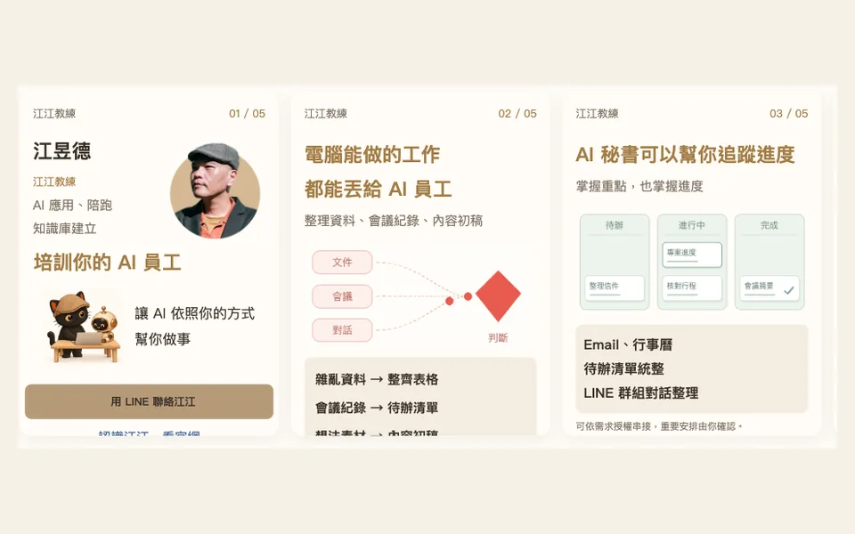
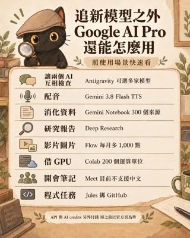

ai-power-tower
AI 戰力大樓小測驗
20 層樓、約 6 分鐘。從基層專員一路爬到經營者，結算你的大腦倍數、手腳倍數與戰力原型。
技能包改版中。以前是一顆一顆的零件，現在整理成一條一條可以直接跑完整件事的工作流。免費區照舊直接帶走；付費工作流陸續上架，先在這裡預告。
不是技能包，不用貼給 Agent，點開就能用。
20 層樓、約 6 分鐘。從基層專員一路爬到經營者，結算你的大腦倍數、手腳倍數與戰力原型。

排圖片、做封面、標註教學截圖。支援圖層、去背與多格式匯出，免登入即可使用。
AI 功能與內建咪卡貼圖暫不開放。

開課前投影在牆上的等待畫面。設定上課時間開始倒數，畫面上的字都能直接改，貼一條 YouTube 網址就能當背景音樂。
上傳會議或訪談錄音，取得依講者分段的逐字稿。可以對照聲音校正文字和講者，再複製或匯出。體驗碼在 LINE 官方帳號留言跟我拿，請勿上傳機密資料。

把一組 LINE 名片做成一條分享連結，放在官網上。訪客一按，LINE 就跳出選好友、選群組的畫面，對方收到可以左右滑的名片，不是一行網址。附江江自己的五張名片當範例。

訂了 Google AI Pro，除了聊天還能用什麼？依「我想做什麼」整理官方列出的權益：查資料、整理文件、開會、影片音樂、語音、寫程式、GPU，以及哪些要另外付錢。
這幾包是基礎工具跟體驗包，直接帶走，不用留資料。
叫它幫你說明這個技能包、做風險評估、檢查惡意指令、檢查跟你現有的系統會不會衝突，都沒問題、你也確認同意後，再協助下載安裝。
給 NPO 與社福單位整理個案紀錄用。AI 讀資料之前，先在你自己的電腦上把名單上的人名、身分證號、手機、Email 換成代號。終端機與桌面 App 都能裝，需下載安裝。
中文版技能包全生命週期管理。從零開始寫技能包到迭代維護，整合 Anthropic 與 OpenAI 官方做法。
管你整個工作流裡技能包之間的關係。四模式：觸發詞健檢、Skill 快篩、整併與拆分、更新檢查。
把書、論文、影片、Podcast 或自己的想法，提煉成能追問的 AI 顧問。先建可追溯的來源底座，再寫十區塊人格，最後補八個思維引擎子模組。附提煉流程十步、反模式庫、一頁速查模板與活人公開資料自動更新版。完整做法見 這篇深度文章。
AI 分析得越完整，人越難決定。這個技能包把方案裡真正需要你拍板的三到五個分岔口抽出來，每題配上選項與代價，做成一頁可以點的網頁；點完底部組出答案串，複製貼回對話就繼續往下做。附空白模板與一頁可以直接點的示範頁。
AI 有時候回答太複雜。這個技能包讓它用簡單的方式，甚至畫成示意圖，讓你一看就懂：第一句就是答案、最多三點；要你決定的事給兩三個選項加推薦理由；講不清楚就畫圖，框和箭頭滑鼠移上去才浮出細節。附空白模板與一頁可以直接滑的示範頁。
直接跟 Naval 聊財富、槓桿、幸福、決策、自我、關係。雙軌：Naval 自己的話加公開討論。
給創業者與主管的第一性原理對練夥伴。拆產品、拆市場、拆團隊與資源配置問題。也可以叫它靈魂考驗你，尖銳但不羞辱，而且有退場條件。
模糊的問題變精確。逐詞確認，每個名詞、動詞、形容詞都不留模糊空間。
三節奏（學習地圖、快速評估、深度評估）加五維度評分，上課前先評估江江適不適合你。
把 Webnode、Wix、Squarespace 這類平台上的網站整站抓下來、補抓藏在 JSON 裡的相簿圖、重整成靜態站、部署到 Cloudflare Pages 並全量驗收。實例是一個 161 頁、14,495 個檔案的攝影公司網站，前兩次備份都漏掉 9,080 張相簿圖。完整過程見 這篇深度文章。
把 YouTube 影片變成有時間戳、截圖、摘要的網頁報告，含 ASR 備援。
用 HTML 做高保真原型、設計 Demo、互動展示、簡報和動畫探索。花叔（alchaincyf）的作品，使用前先看 README 跟授權（Personal License）。
Anthropic 官方 frontend design skill，主打做出更有觀點、更不像通用 AI 模板的前端介面。適合網站、landing page、dashboard 設計。
目前累積的 22 包，每包都有新手引導。陪跑時依你的案子挑幾包給你，不是全部給，確切哪幾包在方案確認時一起定。這裡只秀出來，不提供下載。
想拿到這些，先看陪跑方案。